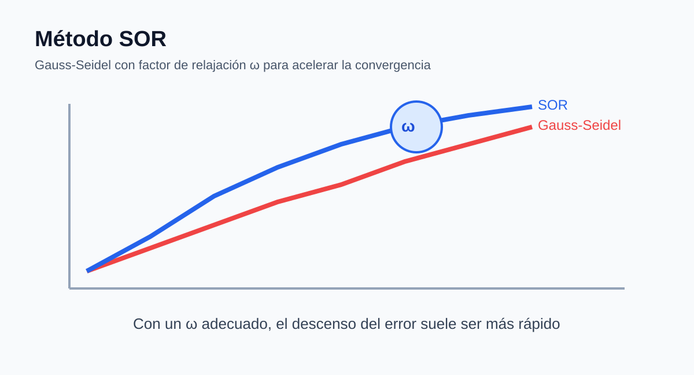

Contexto general del tema seleccionado
Balance de carga en microservicios mediante métodos numéricos es el eje central de este proyecto. El propósito del sitio es representar cómo se reparte el tráfico entre tres servicios principales de una arquitectura distribuida: autenticación, catálogo y pagos. Cada variable del sistema lineal representa la carga efectiva de uno de esos microservicios, mientras que la matriz de coeficientes expresa el nivel de dependencia, acoplamiento y transferencia de solicitudes entre ellos. A través de esta formulación matemática se puede estudiar si el sistema es estable, si soporta escenarios de alta presión y si presenta problemas de condicionamiento que compliquen la obtención de una solución confiable.
Desde el punto de vista de ingeniería de sistemas, este modelo no solo resuelve ecuaciones: también permite interpretar saturación, rendimiento, sensibilidad numérica y eficiencia computacional. En un caso ideal, los servicios están bien balanceados; en un caso bajo estrés, las llamadas internas y la magnitud de la carga crecen notablemente; y en un caso mal condicionado, dos componentes se vuelven tan parecidos que distinguir sus efectos resulta difícil. Dentro de ese marco, la página actual se centra en Método SOR. SOR incorpora un factor de relajación para acelerar la convergencia, lo que resulta útil cuando la distribución de solicitudes es más exigente o el sistema responde lentamente.
Contexto del método
El método SOR parte de Gauss-Seidel, pero introduce un factor de relajación ω que puede acelerar el proceso cuando se elige adecuadamente. En el contexto del proyecto, este método es interesante porque permite mostrar que no basta con aplicar un algoritmo: también importa ajustar sus parámetros según la naturaleza del sistema. En escenarios ideales o moderadamente difíciles, un valor de ω ligeramente mayor que 1 suele reducir el número de iteraciones. En esta página se puede modificar dicho parámetro y ver cómo cambian el error, el residuo y la velocidad de acercamiento a la solución de equilibrio entre microservicios.
x1 = carga del microservicio de autenticación
x2 = carga del microservicio de catálogo
x3 = carga del microservicio de pagos
Interpretación de b: demanda neta que debe equilibrarse en cada servicio.

Curvas comparativas que representan la aceleración de convergencia de SOR frente a Gauss-Seidel.
Caso seleccionado y ecuaciones
Caso ideal
Matriz y vector editables
Puedes dejar los valores por defecto del caso o cambiarlos manualmente antes de resolver.
Gráfico 1
Gráfico 2
Resultados
| Iteración | x1 | x2 | x3 | Error | Residuo |
|---|